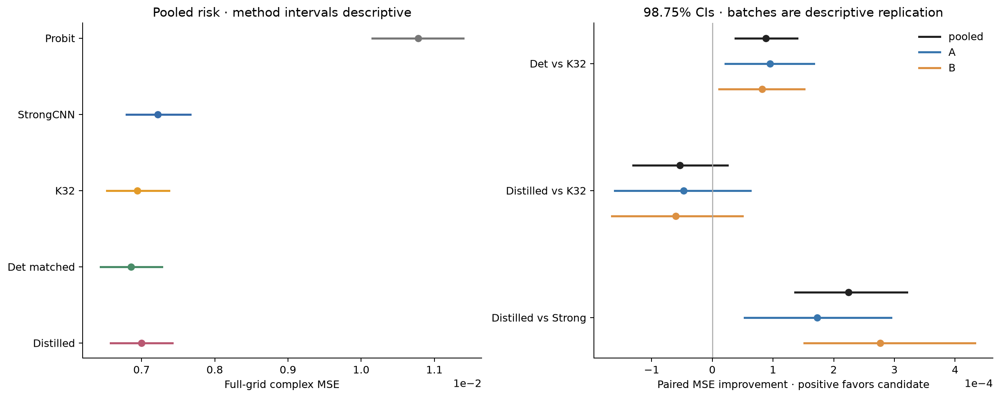

蒸馏相对Strong CNN有风险收益；确定性矩相对K32改善成立。80%保留率区间跨门，全系统推导节省仅0.0117%。模型、prior和物理配置未因结果更改。
Research P3L-R5-B-Confirm：冻结独立泛化完整报告
512 个全新 Maxwell 对象、冻结模型、原 Native96 / Probit64、完整预测封存后评分，已全部完成。214272 参数蒸馏器相对 Strong CNN 的 MSE 降低 3.11%，有配对统计支持；但增量保留率仅为 80.70%，调整后的区间为 [60.28%, 113.12%]，不能统计确认至少80%。
| 冻结动作 | Full-grid complex MSE |
|---|
| Physics Probit | 0.010781033 |
| R4 Strong CNN | 0.007221538 |
| 原 Gaussian K32 | 0.006943309 |
| 确定性 Q64 + matched head | 0.006854734 |
| 214k 蒸馏 W128 | 0.006997018 |
确定性 Q64 + matched head 比 K32 的 MSE 进一步低 1.28%，四比较校正后区间排除零。两批均同向。蒸馏器的 batch64 provider 费用降低97.97%，完整学习链降低46.32%；包含平均1.7303秒物理锚点时，推导的全系统节省仅0.0117%，不能称整个 Maxwell 系统快约49倍。
1. 本轮真正解决了什么
原R5压缩结果来自被用于容量选择的VAL256。此次不训练、不搜索架构，不将已有测试改名；从原先冻结但尚未生成数据的两批清单实际生成512份原P1 Maxwell观测。独立成本探针8个只计费用，不评分。模型、prior、噪声、source/receiver、目标函数、Native96/Probit64和四项统计比较先冻结。模型推断与GT评价隔离，两批32份模型/seed文件全部封存后才评分。
数学和物理对象没有换成更容易的模型。原24×24被动TM/VIE、Gaussian64×Uniform2和C²饱和场原样，source-major复数据，sigma=0.00119211798514519。直接复用原完整优化器，不按噪声球提前停，也不按GT决定初始化或重启。338个Probit报告成功，174个保留有限最佳端点；所有对象进入总体。矩阵残差最大1.64e−15，不等同于全局逆问题已解决。
2. 主结果和风险定义
| 冻结动作 | Full-grid complex MSE |
|---|
| Physics Probit | 0.010781033 |
| R4 Strong CNN | 0.007221538 |
| 原 Gaussian K32 | 0.006943309 |
| 确定性 Q64 + matched head | 0.006854734 |
| 214k 蒸馏 W128 | 0.006997018 |
平方损失采用复材料实Hilbert范数，除以全网格576。每parent先对三个冻结seed的loss平均，统计单位为512个独立parent。不是Best-of-K，也不是用GT挑一个seed。ROI、MAE、raw/clipped、ensemble与相区分层另表保存。完整风险表
两批retention分别78.535%与82.106%；pooled为80.696%。K32增量分母稳定为正，但20,000次配对bootstrap四比较调整后的保留率区间为[60.28%,113.12%]。正式80%contrast下界为−5.43036e−5，因此HOLD。不能引用原VAL92.96%，也不能拿ensemble口径把本门改成PASS。相对Strong的蒸馏风险改善和相对K32的确定性改善均有调整区间支持。统计细节

独立风险和配对效应
3. 输入统计与误差机制
保持旧head只换确定性矩，MSE为0.006857774，已解释此处确定性总改进的96.6%；新matched head额外变化较小。这更支持“材料统计表示对局部估计有用”，不是新posterior正确性。K32的有限MC、population variance尺度和非线性head都参与，不以理论积分更准确直接推出MSE必优。
过渡相占anchor ROI的78.28%，Strong→distill增量约99.66%来自它；纯相占比、每单元风险和总贡献一起报告。相区分析 该现象不等于Maxwell专属传播机制，旧物理特征控制的负结果未被覆盖。
封存后另发现一个可精确核对的解释：蒸馏与K32的seed平均risk差为5.37095e−5，其中ensemble差仅2.76567e−6，余下5.09439e−5来自固定三checkpoint分歧，约占94.85%。这是标准有限集合平方损失恒等式，不是新定理；它提示训练稳定性/误差相关性值得研究，不证明容量足够，也不能用次要ensemble结果救主非劣性门。分解
4. 成本：模块和系统必须分开
真实物理账本合计1,999,504 RHS：新测试truth4096、主512强锚点1,960,400、独立probe35,008；总预算3.3M，未使用部分保留。56,734次新状态/LU，物理接口失败0；反演收敛标志另列，未隐藏cap。没有新训练或云计算。
CPU1、batch64、每parent的p50：优化K32 provider207.606µs、全predict438.259µs；蒸馏4.209µs、235.236µs；Q64为847.091µs、1079.990µs。均有30次原始重复和p10/p90，不用重复encoder的低效API。Native+Probit平均1.7303秒，所以warm全系统推导节省仅0.0117%；这不是联合实测p50，更不是约49倍Maxwell系统加速。
教师数据、278,528 RHS的原joint生成、4,928,104 RHS的昂贵context、原Gaussian训练、29.15秒teacher缓存与约82.76秒三seed学生/head MPS操作等历史成本单列；不把GPU秒与CPU秒当等价货币。只回收teacher CPU的一项batch64回收点约143,596次部署，不是总经济break-even。完整成本
5. 正确性、独立性和失败
37,240个历史ID和74,100历史RNG状态已做元数据审计，A/B和probe不重叠；清单精确沿用，不挑新样本。历史源码与ad71a86e/85b7固定版本核对一致。checkpoint和预测内容采用BLAKE2b身份核对，旧R4/R5未改写。原CPU/MPS3e−6 FAIL仍保留；本轮CPU复现和数值一致性独立通过。新物理端点立即无损持久化，没有首批状态数组丢失。
评分后的独立QA复算全部512×3×6动作的MSE/MAE，与已存分数一致；流式重放317,185账本行与实际solver计数一致。未认证FULL posterior、学习图Maxwell相容性、跨采集鲁棒性或Maxwell不可替代增量。所有这些缺口保留，不因论文目标改门。失败与范围
6. 最终判断
风险泛化成立，但≥80%保留率不够确定。确定性矩具有可复验MSE收益，Q64略增附加费用；蒸馏器具有很强的模块压缩，但现有流程端到端由物理锚点主导。现阶段证据更支持“全局功能统计+局部材料估计的风险—成本权衡”，尚不足以支持强IEEE TAP独立Maxwell新算法。
后续先保留当前冻结候选与negative evidence，在另起noise/layout/contrast协议中检验物理依赖和误差稳定性；不在本轮重新挑checkpoint或加大网络。给Pro的问题是：哪些统计必须保留、种子分歧与期望风险怎样权衡、怎样实际降低共同物理锚点费用。科研裁决 · Pro交接